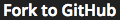

Using GitHub
Unlike other platforms, if you want to work on codecheck challenges in your local environment,
you can!
Requirements
- GitHub account
- Git (If you don't know Git, see this and this.)
- Node.js/npm
- Connect your GitHub account to code-check.io.
- Chant
npm install codecheck -gin the CLI to summon codecheck. - Also: see additional requirements for your challenge in README.md & [YOUR LANGUAGE].md
Setup
- Complete all requirements.
- Click the  Button.
- Fill out the repository name and click the "OK" button.
- Click the link to jump to the generated GitHub repository page.
- Copy the repo link from the "Clone or Download" menu.
- Go to your CLI and
git clone {REPO NAME}to copy the repository to your local directory. - Now, just launch your favorite IDE/editor and crush that challenge!
Running the Tests
- Once you're ready to test your code, run
codecheckfrom your CLI. - The test results will print to stdout like this:
$ codecheck
codecheck version 0.5.3
chai@2.3.0 node_modules/chai
├── assertion-error@1.0.0
└── deep-eql@0.1.3 (type-detect@0.1.1)
Finish build: npm install (1966ms)
////////////////
Output from the test executable
////////////////
codecheck: Finish with code 9
codecheck: tests : 9
codecheck: success: 0
codecheck: failure: 9
Saving your Solution
- Commit your changes to master (See the git docs if necessary).
- Save your answer by pushing to remote master with
git push origin master. - If successful, your answer is also simultaneously saved to the codecheck server.
- Confirm that the status of the challenge changes from "In Progress" to "Saved" in the challenge details page.
Submitting your Solution
- Once you're ready to submit, save your changes following the above instructions.
- Go to the challenge details page and click
 .
. - You're done! Yaaay!